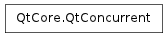

QtConcurrent ¶

Detailed Description ¶
The QtConcurrent namespace provides high-level APIs that make it possible to write multi-threaded programs without using low-level threading primitives.
See the Qt Concurrent chapter in the threading documentation.
- PySide.QtCore.QtConcurrent. ReduceOption ¶
-
This enum specifies the order of which results from the map or filter function are passed to the reduce function.
Constant Description QtConcurrent.UnorderedReduce Reduction is done in an arbitrary order. QtConcurrent.OrderedReduce Reduction is done in the order of the original sequence. QtConcurrent.SequentialReduce Reduction is done sequentially: only one thread will enter the reduce function at a time. (Parallel reduction might be supported in a future version of Qt Concurrent.)